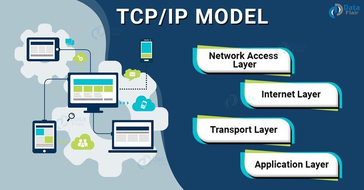

🔌 TCP/IP — The Language of the Internet

TCP/IP (Transmission Control Protocol / Internet Protocol) is the fundamental set of rules that every computer follows to send and receive data over the internet. Without TCP/IP, your computer wouldn't know how to talk to Google's servers, and you wouldn't be able to load this page.
✏️ My simple way to think about it: TCP/IP is like a postal service. IP (Internet Protocol) is like writing the address on an envelope — it makes sure your letter gets to the right city and street. TCP (Transmission Control Protocol) is like the postal worker who tracks the package, makes sure it arrives in one piece, and asks for a replacement if something gets lost.
📦 What Each Part Does
📮 IP (Internet Protocol)
IP handles addressing and routing. Every device connected to the internet has a unique IP address (like 192.168.1.1 or 172.217.168.46). IP figures out the best path to send your data across the network — just like a GPS finds the fastest route for a delivery truck.
📬 TCP (Transmission Control Protocol)
TCP is responsible for reliability. It breaks your data into small chunks called packets, numbers them, sends them, and then reassembles them on the other side. If a packet gets lost along the way, TCP notices and asks for it to be resent. This is why you don't see missing pieces when you load a webpage or download a file.
📊 The 4 Layers of TCP/IP
🔌 Layer 1 — Network Access Layer
The physical stuff — cables, Wi-Fi signals, Ethernet, fiber optics. This is how data actually moves through wires or through the air.
🌍 Layer 2 — Internet Layer
Where IP lives. This layer handles addresses and decides which path data takes across the network.
🚚 Layer 3 — Transport Layer
Where TCP and UDP live. This layer makes sure data gets there completely and in the right order (TCP) or sends it as fast as possible without guarantees (UDP).
📱 Layer 4 — Application Layer
Where HTTP, FTP, SMTP, and other protocols live. This is what your apps use — web browsing, email, file transfers, streaming.
┌─────────────────────────────┐
│ HTTP │ FTP │ SMTP │ DNS │ ← Application
├─────────────────────────────┤
│ TCP │ UDP │ ← Transport
├─────────────────────────────┤
│ IP │ ← Internet
├─────────────────────────────┤
│ Ethernet │ Wi-Fi │ Fiber │ ← Network Access
└─────────────────────────────┘
🆚 TCP vs UDP — The Reliable vs Fast Debate
📦 TCP (Reliable)
Slower, but guaranteed delivery
Used for: web browsing, email, file downloads, banking
⚡ UDP (Fast)
Faster, but can lose data
Used for: live video calls, gaming, streaming, VoIP
💭 What I learned: TCP/IP is the unsung hero of the internet. We never see it, but nothing would work without it. It's amazing that your phone and a server on another continent can "agree" on rules to send data back and forth perfectly, most of the time.
📋 Real Examples — Where I Use TCP/IP Every Day
- Watching YouTube — uses TCP for reliable streaming
- Playing online games — often uses UDP for speed
- Downloading a file — definitely TCP (can't have corruption)
- Zoom video call — mostly UDP (speed over perfection)
← Back to all terms